IT Support · Service Desk · Networking · Cybersecurity
I keep systems running and people working.
Experienced in hands-on service desk and desktop support, troubleshooting, remote
support tooling, and now expanding deliberately into networking and cybersecurity.
Currently with the Department of Public Works and Highways while finishing my BSIT
in Network & Cybersecurity at Mapúa Malayan Digital College.
I started in 2013 as a Geek Squad remote agent, fixing customer machines I never
physically touched. From there to Forever 21, supporting their stores worldwide from Manila,
then Tier 1 and Tier 2 service desk work at Accenture, and now records, documentation and technical
support for the Planning & Design Section at DPWH Capiz 1st DEO.
The thread running through all of it is the same: understand the problem properly before
touching anything, document what you did, and leave the user better off than a
quick reboot would. That habit is what pulled me toward cybersecurity: the same
discipline, applied before something breaks instead of after.
What I’m working on
▹ Finishing my BSIT major in Network & Cybersecurity
▹ Building out home lab practice in network security
▹ Google Cybersecurity certificate track
How I work
01
Diagnose
Understand the actual problem before changing anything.
02
Document
Record what was found, what was changed, and why.
03
Verify
Confirm the solution actually works, not just that it should.
04
Improve
Look for ways to prevent the same problem happening again.
02 / Technical Focus
Where I focus
Four areas that make up the actual shape of my career so far — where I’ve
spent the most time, and where I’m deliberately investing more.
IT Support
Where I started, and still the foundation: over a decade of hands-on troubleshooting,
remote desktop support, and service desk operations across global retail and
enterprise environments.
Hardware & Software Troubleshooting
Remote Desktop Support
Service Desk Operations
Networking
Practical network troubleshooting from the service desk side, now being built out
formally through my BSIT major in Network & Cybersecurity.
Network Troubleshooting
In active coursework
Cybersecurity
Where the career is heading: the full Google Cybersecurity Professional Certificate,
plus two shipped projects — a malware/phishing scanner and a security awareness
platform — not just coursework.
Phishing & Malware Detection
SIEM & IDS Concepts
Security Awareness
Automation & AI
PowerShell and Python to automate the repetitive parts of IT support, and AI tools
used deliberately to accelerate research, prototyping and troubleshooting —
while I remain responsible for the architecture, testing and final result.
PowerShell & Python
AI-Assisted Development
03 / Projects
What I’ve built
Featured security & IT projects
Flagship · Desktop · Python · Running on Windows
Skull Sentinel
Threats end here.
A Windows malware and phishing scanner. Hashes files against a local signature
database and flags double-extension tricks like invoice.pdf.exe.
Scores URLs for typosquatting, punycode homographs, raw IP addresses and
suspicious TLDs, then reads message text for urgency language and runs every
link it finds back through the URL checker.
Flagged files are quarantined by moving them, not deleting them, and can be
restored. The status row refuses to claim real-time protection it does not have,
and every action lands in a local activity log, because a security tool should
not ask you to trust it silently.
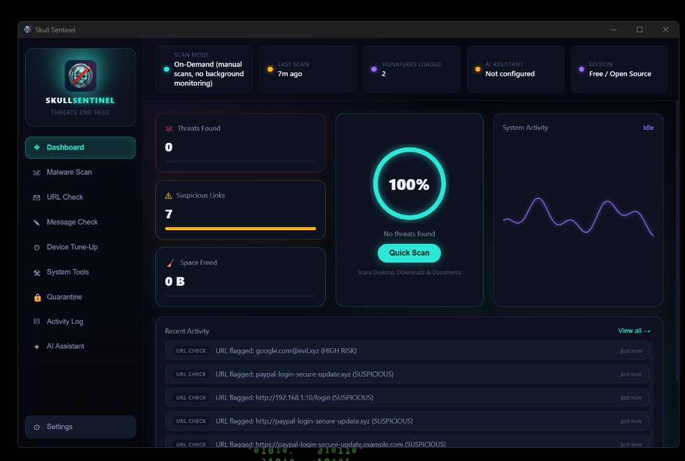
Status row reports only what the app actually knows
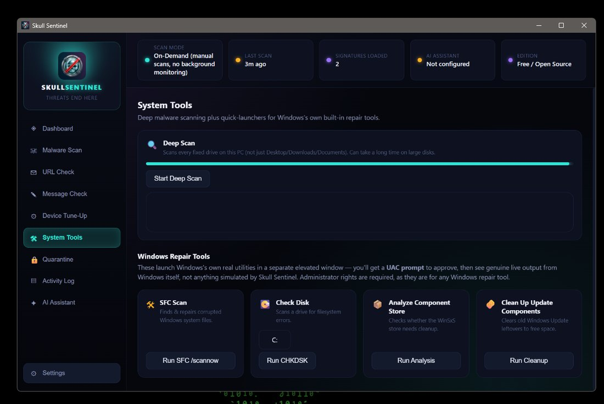
Launches Windows’ own SFC, CHKDSK and DISM, does not reimplement them
Demonstrates: practical malware/phishing detection engineering, and a security-first
instinct for honest status reporting over false reassurance — restore-friendly quarantine, not silent deletion.
A single PowerShell script that opens as a dashboard of 29 one-click fixes for the
problems a service desk sees every day, across networking, system repair, printing,
diagnostics and security. Winsock and TCP/IP resets, DNS flush, hosts file restore,
SFC and DISM, Windows Update repair, print spooler recovery, SMART disk health,
pending reboot checks and a failed sign-in audit.
The design decisions are the interesting part. Every fix is a documented Windows
command, nothing third-party and nothing bundled, so the tool is auditable by
anyone who knows Windows. Every card confirms before it runs. The hosts file reset
aborts rather than proceed if its backup fails.
The rule the whole thing is built on: the log never claims success it has not
verified. Every action captures the command’s real exit code and output
and reports what actually happened, and several go further and check the world
instead of the exit code. Renew IP reads back the address you ended up holding and
flags a self-assigned one. The connectivity test separates a dead link from a DNS
fault. That matters because the person reading the log is deciding whether to stop
troubleshooting.
Collect for Ticket gathers what a ticket always asks for, down to the serial
number for warranty lookup, and writes it to a file. The session log writes itself to
disk from launch, so the record of what was done to a machine survives even if the
window is closed mid-repair.
Alongside the fixes sits a knowledge base of 24 Windows faults, and
one search box queries both. Type 0x80073712 and you get the component
store article plus the DISM card it tells you to press. Type printer offline
or temporary profile and you get symptoms, the real cause, and numbered
steps ordered cheapest and most likely first. Reading an article writes it to the same
log, so what was looked up is recorded next to what was run.
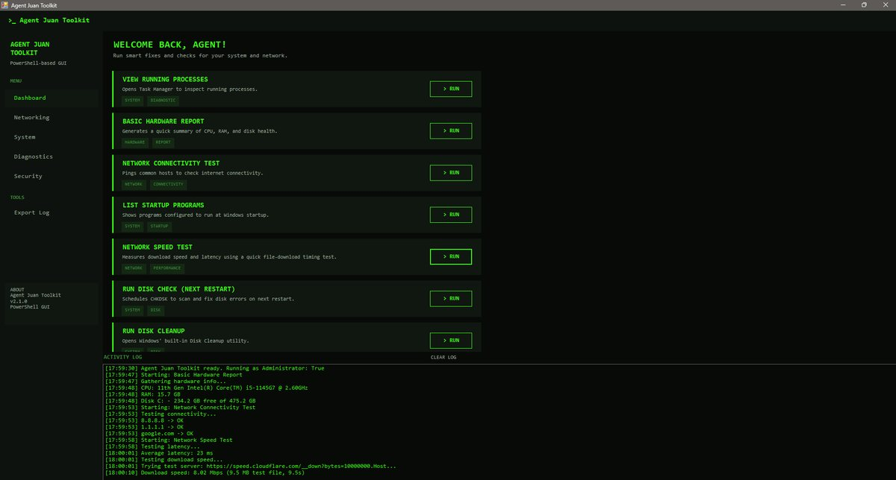
Every fix is a card with a description, tags and a confirmation step. The log below is exportable.
Demonstrates: the bridge from IT support into automation — turning repeated
manual service-desk steps into verified, logged, one-click fixes rather than just faster typing.
A free training platform that teaches people to recognise social engineering before
it costs them. Social engineering does not break your software, it persuades you to
open the door yourself. SE Aware breaks down how phishing, smishing, vishing, spear
phishing and pretexting actually work, in plain language.
Six modules covering the attack types plus safe practice for remote work. A built-in
learning assistant lets someone paste in a suspicious message and get a plain-language
read on it without identifying themselves. Free, with no account and no signup.
Demonstrates: that I treat cybersecurity as a people problem as much as a
technical one — the human layer, not just tools and scanners.
Personal project · Full-stack · Phases 1–6 of 7 built
AccPH
Real books for a Philippine business, not a toy ledger.
A Philippine payroll and accounting system, built phase by phase: authentication
and six-role RBAC (enforced server-side, not just hidden buttons), employee and
attendance management, and a deterministic payroll engine that computes SSS,
PhilHealth, Pag-IBIG and BIR withholding tax from versioned government rate
tables — never from a model's guess.
Approving payroll auto-posts a real double-entry journal entry into a general
ledger. Recording a bill or invoice does the same for Accounts Payable and
Receivable, and paying one posts a second, separate entry for the cash movement.
The Trial Balance is computed live from posted entries only, so “Balanced?
Yes” actually has to be earned.
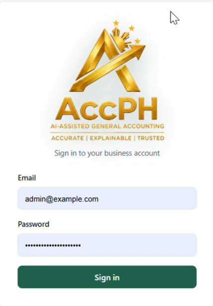
The actual tagline: Accurate · Explainable · Trusted — the design principle behind every choice below
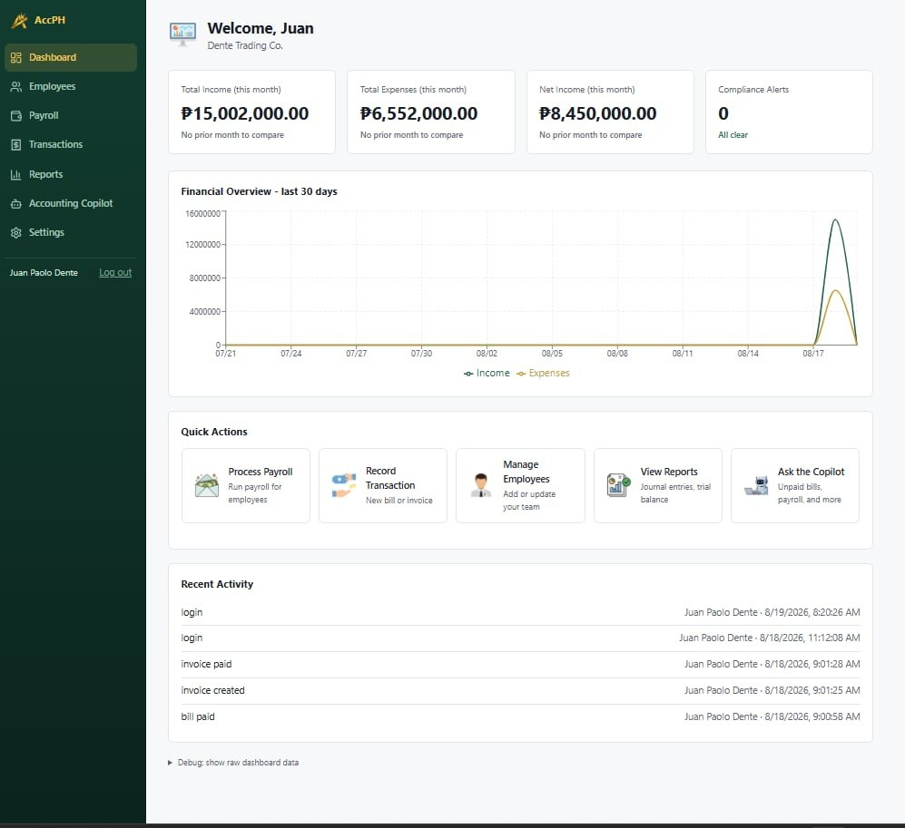
Compliance alerts, real activity, numbers explicitly marked "Available in Phase X" when they're not real yet
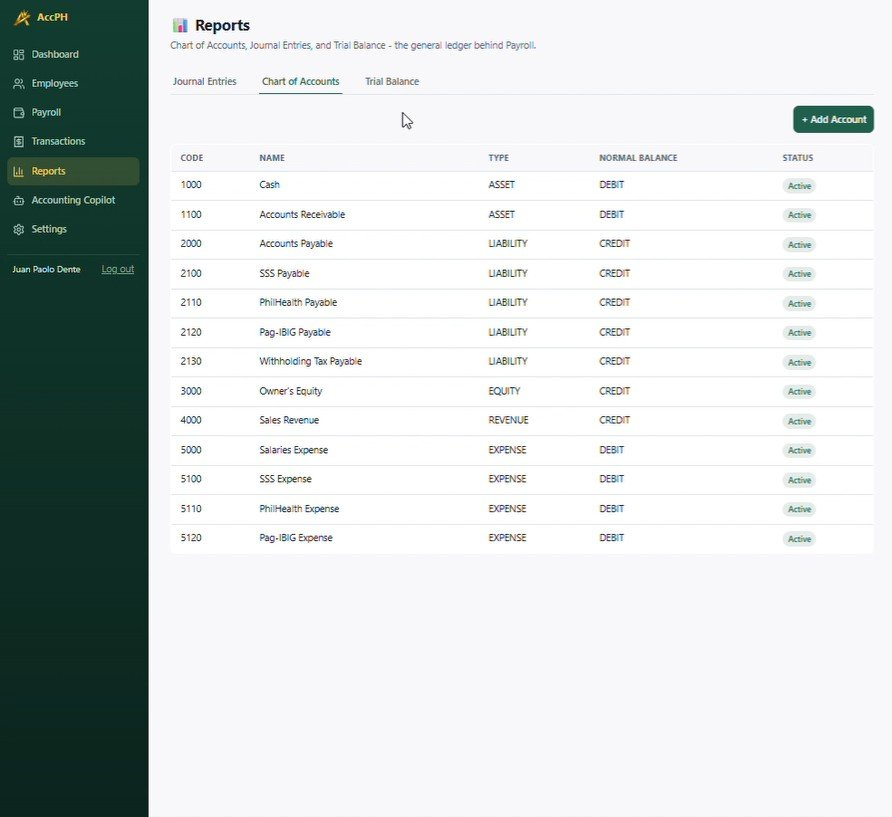
The Chart of Accounts Payroll and AP/AR actually post into
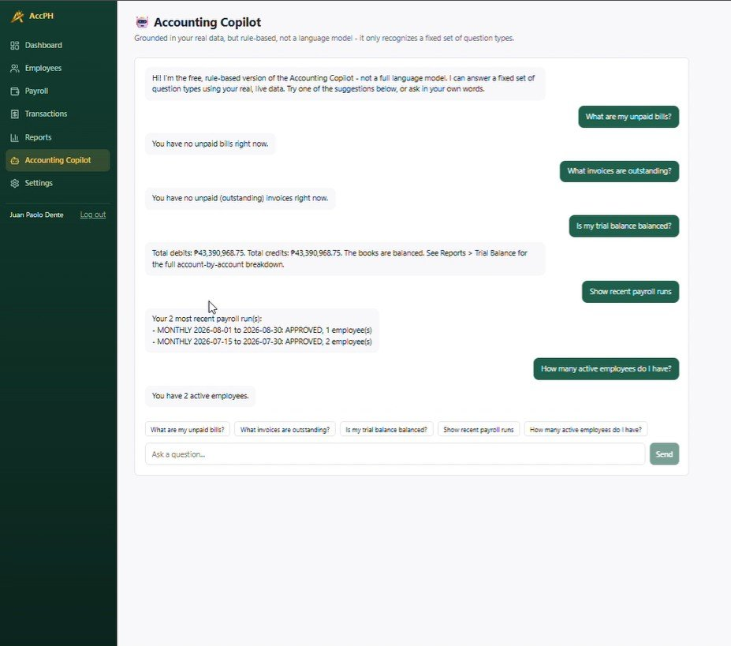
The free-tier Copilot: rule-based, not an LLM — every answer is pulled from real, live data
Demonstrates: full-stack ownership of a domain most engineers avoid —
real accounting rules, real government compliance data, and honesty about what AI in the product can and can't do.
payroll calculation engine · a bug caught in live testing
// A Daily-rate employee's ₱700/day was fed straight into
// SSS / PhilHealth / Pag-IBIG — all three are legally MONTHLY schemes.
// A ₱700 "month" was qualifying for near-zero contributions.
//
// Fixed: convert to a monthly-equivalent salary first (rate × periods/month),
// look up the correct bracket, then divide the contribution back down
// to a per-period share. Monthly employees are unaffected (divisor = 1).
▹ Deterministic calculation engine — every peso comes from a versioned
rate table in the database, never computed by a model
▹ "View Calculation" on every payroll line: names the exact rate-table row
and effective date that produced each number
▹ Real government rates: PhilHealth, Pag-IBIG and BIR withholding cited
from primary sources; SSS cross-checked against a cited circular, one
transcription error caught and corrected before it shipped
▹ Draft → Approve and Draft → Post workflows — the one
irreversible step is explicit and logged, everywhere
▹ Free-tier AI honestly labeled as such: OCR receipt scanning with
per-field confidence levels, and a rule-based Copilot that says
"I don't know" rather than guessing
TypeScript
React
Node.js / Express
PostgreSQL
Prisma
RBAC
Double-entry Accounting
Tesseract OCR
Android · Kotlin · Running on device
Lakat
A trip planner for Panay Island.
Plans a journey across Iloilo City jeepneys, Ceres buses, provincial vans and
tricycles, and tells you what it will cost. Existing planners stop at the city
limits; Lakat handles the part where you take a jeep to the terminal, a bus to
Kalibo and a van the rest of the way.
Everything runs on the device. No server, no API key, and no network permission
in the manifest at all. The routing engine is pure Kotlin with no Android
dependency, so it compiles and tests on a plain JVM.
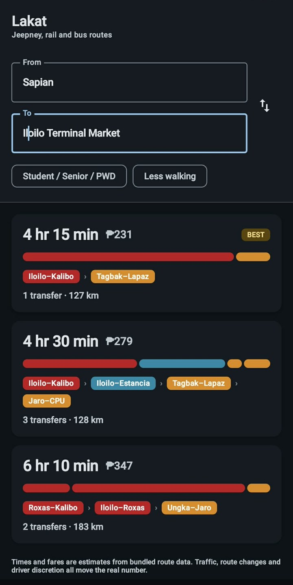
Three options ranked by generalised cost, not clock time
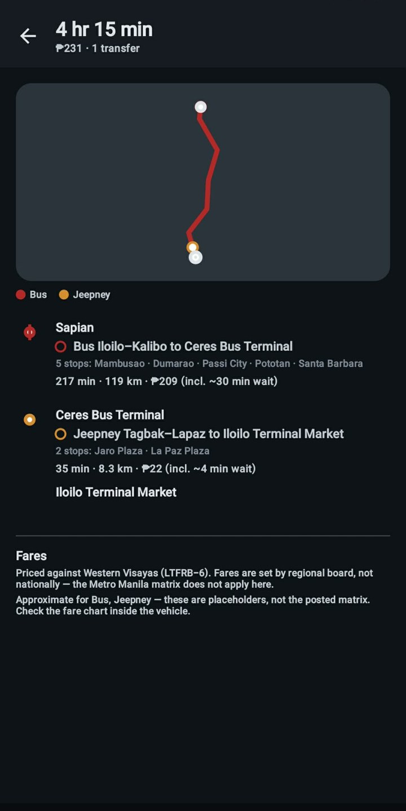
Schematic map drawn on a raw Compose Canvas, no map SDK
MultiModalRouter.kt · the search state
// A stop alone cannot express a transfer penalty: by the time
// the search arrives it has forgotten which vehicle it rode in on.
state = (stop, route currently aboard)
// riding one more stop on the same route -> free
// boarding a different route -> wait + transfer penalty
▹ Hand-written A* search over a route-expanded state space, not a library
▹ Heuristic admissibility proven by test, not asserted: the same code runs as
Dijkstra at zero heuristic weight and both must return identical costs
▹ 19 unit tests covering fares, transfers, the spatial index and itinerary continuity
▹ GitHub Actions builds and tests every push, and publishes a signed APK on tag
Demonstrates: the deepest algorithmic work in the portfolio —
a hand-written, test-proven pathfinding engine, not a library call.
A social network built around the feel of Friendster-era Philippine internet,
before feeds were optimised. Accounts, profiles, a friend graph, a posting feed
with image and YouTube embeds, reactions, comments and live chat.
The nostalgia is in the feature set, not just the styling: a Slam Book
with nickname, motto, hugot line and ka-love team, plus Laro, Capsule, Awards and a
“who viewed your profile” counter. Choosing those over a generic bio is
the whole point of the project.
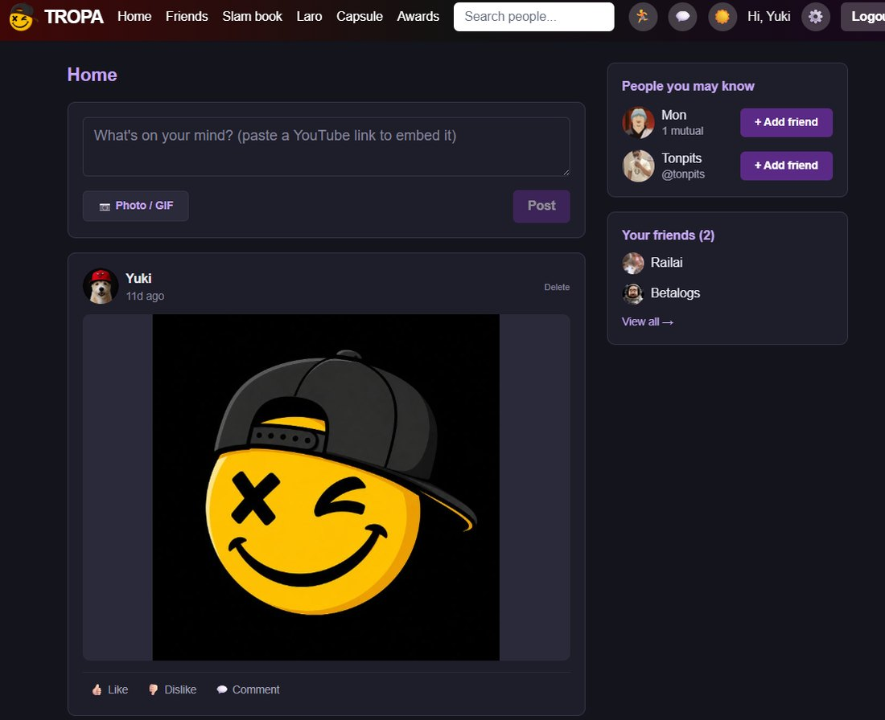
Feed, composer, friend suggestions
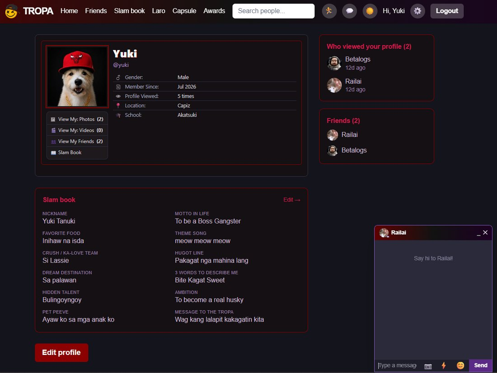
The Slam Book, and who viewed your profile
Demonstrates: full-stack product thinking beyond utility apps —
auth, social graph, live chat and a feed, shipped and live.
Handle incoming and outgoing communications, maintain records and reports, and support
technical staff with administrative and documentation tasks.
Apr 2022 to Dec 2022
Senior Administrative Assistant III
DPWH · Central Office
Provided administrative and IT-related support, configured Microsoft applications for
staff, and digitised office documents for archival and retrieval.
Jul 2018 to Feb 2020
IT Service Desk Analyst
Accenture Philippines
Delivered Tier 1 and Tier 2 support to store sites across multiple regions and time
zones, managing incident tickets through to resolution and supporting PC hardware,
desktop operating systems, business applications, peripherals and POS systems.
Coordinated with vendors on replacement parts, dispatched field technicians, and wrote
knowledge base articles so recurring issues could be closed at first contact.
Sep 2016 to Jun 2018
IT Store Support
Forever 21 · Pasay City · global store support
Supported Forever 21 stores worldwide from the Manila hub, diagnosing hardware and
software faults, maintaining POS terminals, and keeping store IT running through peak
retail hours across multiple time zones.
Jun 2013 to Jan 2016
Remote Desktop Specialist
PeoplePlusTech Inc. · deployed to Accenture, Geek Squad account · Makati City
Performed advanced software repair, installations and virus removal on customer
machines through remote service tools. Analysed, diagnosed and resolved client
problems, logged and tracked issues to closure, and escalated what needed a
specialist. Appointed Tech Lead for a small group of new agents, taking their
escalations and coaching them through resolution. Worked to defined SLAs in a
team environment.
05 / Education & Training
Education & Training
2024 to Present
In progress
BS Information Technology
Major in Network & Cybersecurity · Mapúa Malayan Digital College
Network administration, cybersecurity principles, database systems and software
development, with hands-on IT troubleshooting and database design projects.
2011 to 2013
Information & Communication Technology
Premiere Computer Learning Center
Foundational skills in computer hardware, networking, operating systems and
technical troubleshooting.
06 / Skills & Certifications
What I bring
IT support
Hardware & Software Troubleshooting
Remote Desktop Support
Virus Removal
System Re-imaging & Reformatting
Active Directory
POS System Support
IT Documentation
SLA-driven Support
Networking
Network Troubleshooting
Cybersecurity
Cybersecurity Fundamentals
Security Awareness
Phishing Analysis
Malware Detection Concepts
SIEM Concepts
Intrusion Detection Systems (IDS)
Automation & development
PowerShell
Python
JavaScript / TypeScript
React
Node.js
PostgreSQL
CI/CD (GitHub Actions)
AI-Assisted Development
Tools
ServiceNow
Jira
LogMeIn Rescue
Citrix
Microsoft Office & Outlook Configuration
Certifications
Coursera credentials link straight to their official verification page.
The COSH certificate carries its DOLE registration number.
Cybersecurity
Google Cybersecurity Professional Certificate
9-course program: Foundations of Cybersecurity, Play It Safe, Connect and Protect,
Tools of the Trade (Linux & SQL), Assets Threats & Vulnerabilities, Sound the Alarm,
Automate Cybersecurity Tasks with Python, Put It to Work, Accelerate Your Job Search with AIGoogle · Aug 2026Verify
✓Introduction to Ethical Hacking PrinciplesSkillUp · Sep 2026Verify
IT & Professional
✓Technical Support FundamentalsGoogle · Sep 2026Verify
✓COSH, 40-hour Construction Occupational Safety & Health
with 2-hour Training of TrainersDOLE-accredited · Feb 2026B10215-017
✓Computer Hardware Servicing NC IITESDA · Sep 2011NC II
AI & Technology
Google AI Professional Certificate
7-course program: AI Fundamentals, Brainstorming & Planning, Research & Insights,
Writing & Communicating, Content Creation, Data Analysis, App BuildingGoogle · Aug 2026Verify
✓AI Fundamentals with ClaudeAnthropic & AWIT · Jul 2026Verify
✓Introduction to Artificial IntelligenceIBM · Feb 2026Verify
✓Artificial Intelligence Essentials V2Coursera · Credly badge · Feb 2026Verify
✓Generative AI: Prompt Engineering BasicsIBM · Aug 2026Verify
✓Claude for Professional Productivity and Task AutomationPackt · Aug 2026Verify
✓Fundamentals of Microsoft 365 Generative AIMicrosoft · Aug 2026Verify
07 / Contact
Let’s connect
I keep systems running and people working.
I’m open to opportunities in IT support, service desk, networking and cybersecurity
where I can solve technical problems, build practical solutions, and keep growing as a
security-focused IT professional. Have something worth discussing? Email or LinkedIn are
the fastest ways to reach me.